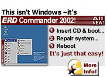

- data -
 |
Listed below are links to the HTML versions of the individual chapters. . NOAA POLAR ORBITER DATA USER'S GUIDE Table of Contents NOAA Polar Orbiter Data User's Guide Table of Contents Introduction Page NOAA Polar Orbiter Data User's Guide The NOAA Polar Orbiter Data User's Guide (November 1998 version) is a document that describes the orbital and spacecraft characteristics, instruments, data formats, etc. of the TIROS-N, NOAA-6 through NOAA-14 polar orbiter series of satellites. Listed below are links to the HTML versions of the individual chapters. |
|
. Landsat 7 is the latest NASA satellite in a series that has produced an uninterrupted multispectral record of the Earth's land surface since 1972. Along with data acquisition and the USGS archival and distribution systems, the program includes the data processing techniques required to render the Landsat 7 data into a scientifically useful form. Special emphasis has been placed on periodically refreshing the global data archive, maintaining an accurate instrument calibration, providing data at reasonable prices, and creating a public domain level one processing system that creates high level products of superior quality. The Landsat-7 Science Data User's Handbook is a living document prepared by the Landsat Project Science Office at NASA's Goddard Space Flight Center in Greenbelt, Maryland. |
 |
It also describes and illustrates the necessity of appropriately using the cues of visualization, and the effects of different media on the use of certain cues. .I recommend this book for anyone engaged in trying to make sense of data. The many examples alone make this book worth having. The book describes visualization examples in terms of how and why a certain technique effectively depicts information contained in the source data. |
|  |
. One important aspect of this link is how to connect, or anchor, the symbols used at the higher level to the objects in the vision system that these symbols refer to. Anchoring is complicated by the fact that the vision data are inherently affected by uncertainty. We propose an anchoring technique that uses fuzzy sets to represent the uncertainty in the perceptual data. We show examples where this technique allows a deliberative system to reason about the objects (cars) detected by a vision system embarked in an unmanned helicopter, in the framework of the Witas project. |
A site I really like: http://www.dosado.com/cgi-bin/dosado/dosadata.cgi?page=alpha